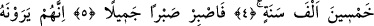
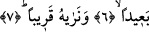
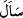
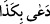
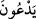

ONLAR,
O AZÂBI
UZAK GÖRÜYORLAR
Bismillâhirrahmânirrahîm
1. Birisi, inecek azâbı istedi!
2. (O), inkârcılar içindir. Onu savacak hiç kimse yoktur.
3. (O), yükselme derecelerinin sâhibi olan Allah katındandır.
4. Melekler ve Rûh (Cebrâil), oraya, mikdarı (dünya senesi ile) elli bin yıl olan bir
günde yükselip çıkar.
5. (Rasûlüm!) Şimdi sen güzelce sabret.
6. Doğrusu onlar, o azâbı (ihtimalden) uzak görüyorlar.
7. Biz ise onu yakın görmekteyiz.
“Birisi, inecek azâbı istedi!”. “/Seele/istedi” fiili Arapça’da “suâl” kökündendir.
Suâl, çağırma, sorma ve talep anlamınadır. Arapça’da
“ dendiğinde “filanca filanca kişiyi çağırdı ve talep etti” demektir. Yine bu
anlama gelmek üzere Allah Kur’ân-ı Kerîm’de şöyle buyurur: “Orada güven içinde
(canlarının çektiği) her meyveyi isterler.” (ed-Duhân, 44/55) Bu âyet-i kerîmede
“isterler” mânâsına gelen fiilin Arapça’sı “/yed’ûne” kelimesidir. Yâni “onlar
cennette canlarının çektiği her meyveyi isterler” demektir. Bu durumda âyetin mânâsı
“isteyenin biri, -istese de istemese de- mutlakâ inecek olan azâbı istedi” olur. Bir başka
ifâdeyle “o kişi azâbın inmesini istedi” demektir.
Arap dilinde, benzer fiilin bir diğer benzer fiile ve zıd fiilin başka bir zıd fiile
hamledilmesinde çok yaygın bir genişlik vardır. Çünkü âyette yer alan “seele” fiili
“deâ” fiilinin benzeridir. Bu fiil “bâ” harf-i cerri ile müteaddî olur. “Seele” fiili, bâ
harf-i cerri ile geçişli olan “deâ” fiiline benzediği için burada bâ harf-i cerri ile